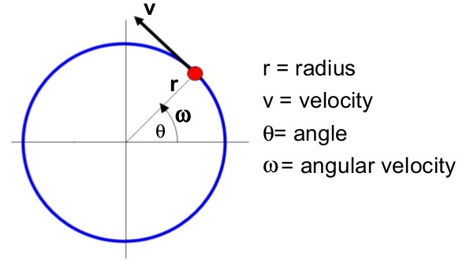

Circular motion is the motion of bodies travelling in circular paths.
Uniform circular motion occurs when the speed of a body moving in a circular path is constant. This can be defined as motion of an object at a constant speed along a curved path of constant radius.
When acceleration (variation of velocities) is directed towards the centre of the path of motion it is known as centripetal acceleration and the force producing this centripetal acceleration which is also directed towards the centre of the path is called centripetal force. 